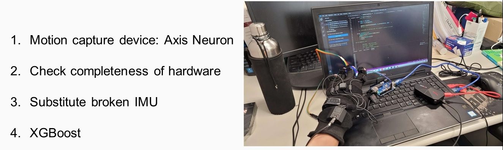
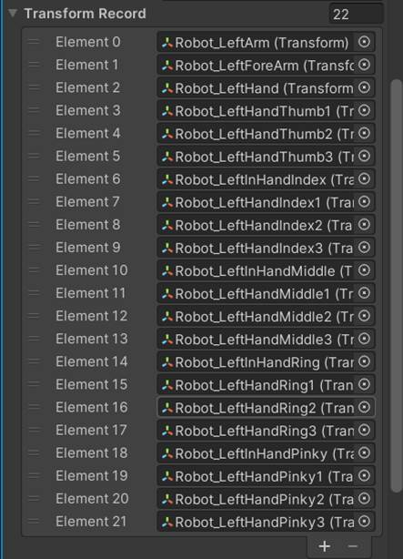

Ziheng Ding
Graduate Student
Social
Contact:
217 Red Gym, 716 Langdon Street, Madison, WI 53706
Research
Graduate
Voluntary research
Supervisor: Prof. Umit Yusuf Ogras/a>
Date:May. 2024 – on going
Report
Worked in the team of designing accelerators for Mamba architecture.
Explored SRAM generator with different technologies and adopted OpenRAM.
Explored on systolic array architecture for synthesizable implementations
Currently seeking systolic array based approaches of Mamba implementations
Undergraduate
Machine Learning on Wearable Devices
Supervisor: Prof. Hui Pan
Date:Jun. 2021 – Aug. 2021
Report
Interacted with users and programs on wearable devices through hand gesture recognition.
Use Axis-Neuron and Unity to collect data from IMUs, and setup gesture detection AI with Python.
Studied the relationship between the number of IMUs and the complexity of hand poses, and conclusion is the following:
a) Able to detect 80% to 90% of static gestures that does not involve transformation from one gesture to another gesture.
b) More IMUs does not always lead to better accuracy. When more than 6 IMUs are placed, gestures become less distinguishable from each other.
c) When more gestures are defined, detection becomes less accurate.
